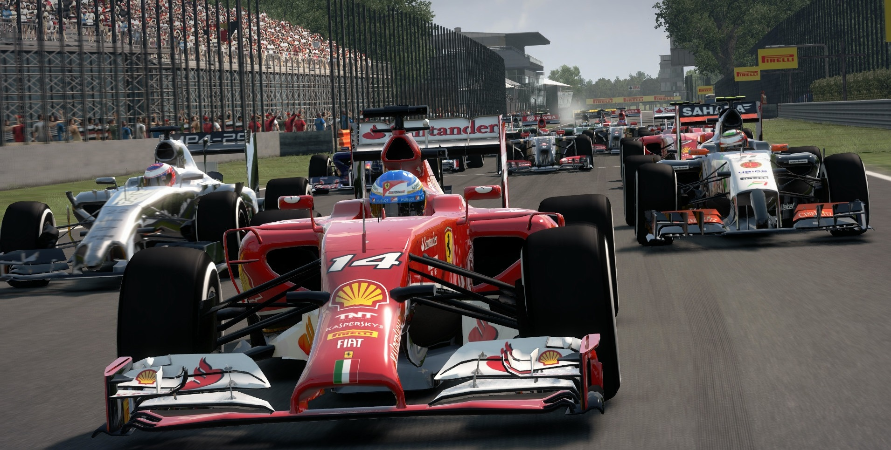
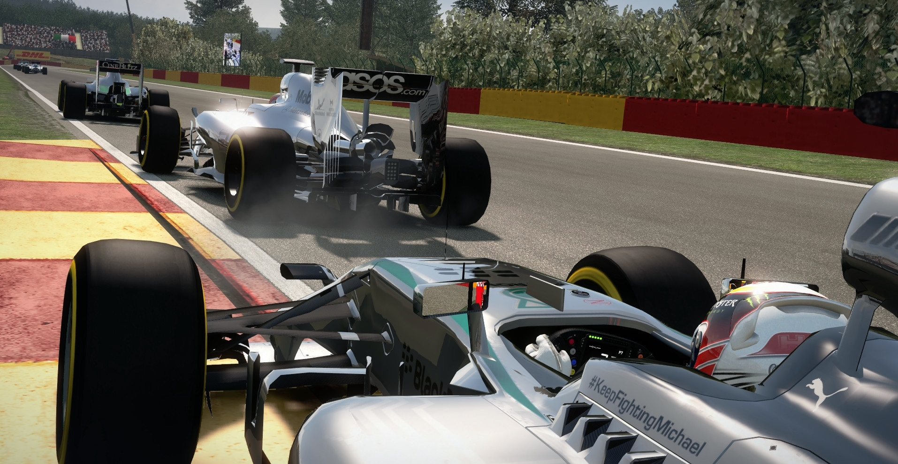
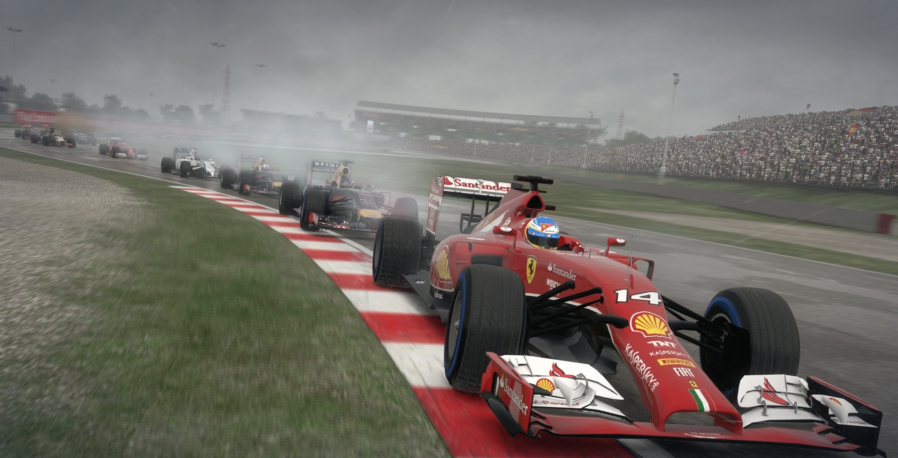
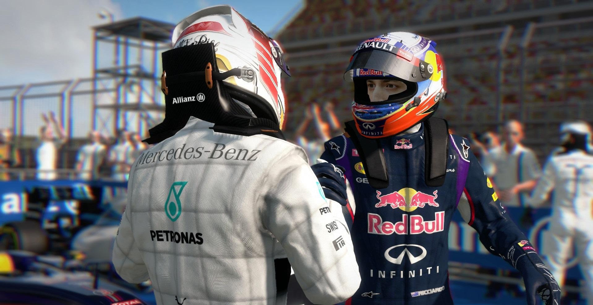

F1 2014
F1 2014 is a racing video game based on the 2014 Formula One season developed and published by Codemasters. It is the sixth Formula One game produced by the studio. The game will feature the team and driver line-ups from the 2014 season, as well as the Red Bull Ring and the brand-new Sochi Autodrom. It was reported in August 2014 that the game will allow players to choose any team to drive for in Career Mode, rather than making the player start at a team lower down the grid and work their way up, as in other titles. The game will not feature Classic Content, a feature from the game's predecessor which allowed users to drive historic Formula One cars around historic tracks. F1 2014 was released on 16 October 2014 in Australia, 17 October 2014 in Europe and on 21 October 2014 in North America for PlayStation 3, Xbox 360 and Microsoft Windows. The game received mixed reviews citing lack of new features and uninspiring career mode.
The game, which is based onthe 2014 Formula One racing season is currently in development by the series owners, Codemasters. Specifically, the Birmingham based branch. Set to be the sixth entry into the the popular racing series, F1 2014 is also going to continue the tradition of also being published by Codemasters.
Running on the Ego Engine 3.0, which was jointly developed by Codemasters and Sony Computer Entertainment, the game is being primarily developed for the Xbox 360, PlayStation 3 and PC, with no plans for an 8th generation port being released next year are still in the works. Given that F1 2015 is being released on 8th gen tech next year, this may replace the 2014 port.
The game will also be including new aspects of the sport itself, ranging from the new circuits that will be included in the game and the recently introduced turbo charged vehicles. The games Creative Director says, “There’s been a dramatic shift in the sport; the largest shake up in the rules and regulations for a very long time and the new power units provide a very different kind of challenge, for both driver and team. By delivering all of these changes, F1 2014 will make for an exciting and refreshingly different experience.
The evaluation system actively removes assists as you improve as a driver, thus making you a better driver. The games Creative Director, Stephen Hood has said, “the new driver evaluation system analysing each player’s skill level and suggesting appropriate game settings, plus re-graded difficulty levels including a brand new Very Easy setting, we aim to deliver a thoroughly rewarding F1 experience for players of all abilities, from the novice to the seasoned pro.” This systematic removal of aid leads to you being better prepared for the online competitive scene. Codemasters themselves have said, “we want all of our players to race competitively, more quickly.”